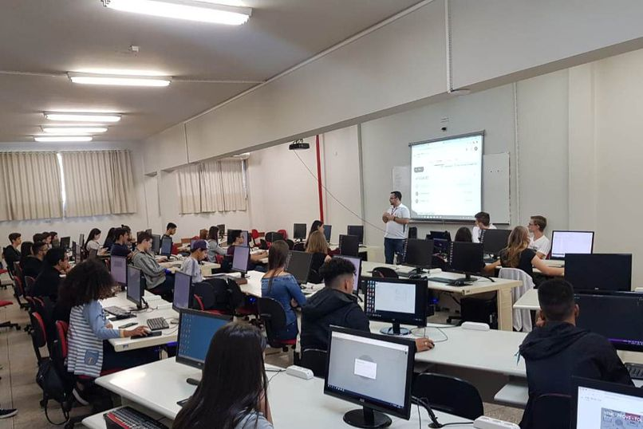

Curso técnico é um curso de nível médio. Ele combina conhecimentos teóricos e práticos, geralmente relacionados a uma profissão específica. Brasil, o ensino é organizado nos seguintes níveis:
– Ensino Fundamental: do primeiro ao nono ano de estudo, normalmente dos seis aos quatorze anos de idade, se o aluno não repetir nenhum ano.
– Ensino Médio: da primeira à terceira série, normalmente entre os quinze e os dezessete anos, se o aluno não repetir nenhuma série.
– Ensino Superior: é quando o aluno entra em alguma faculdade, universidade ou instituição de ensino superior.
Se quiser fazer um curso técnico precisa terminar primeiro o ensino fundamental, ou seja, é necessário ter estudado pelo menos até o nono ano do ensino fundamental. A formação técnica funciona como um nível intermediário entre o ensino médio e o ensino superior. E assim que você conclui seus estudos, estará apto para trabalhar no setor que escolheu. Você receberá um diploma, válido em todo o território nacional.

Edit by Filipe Wesley©